📦 Productos Estructurados en Viajes
Ahora cada viaje puede tener una lista de productos asociada con información detallada. Ya no es necesario anotar los productos en "Observaciones" de forma libre.
Datos de cada producto
| Campo | Ejemplo |
|---|---|
| Nombre | ACEITE GRANO DE ORO MEZCLA 4 × 5000 ML |
| Rubro | Alimentos |
| Cantidad | 1560 |
| Unidad | cajas |
| Valorización | $150.000 |
Cómo usar
- Al crear o editar un viaje, aparece la sección "Productos"
- Hacé clic en "Agregar producto" para sumar una fila
- Completá los campos que conozcas (nombre, rubro, cantidad, unidad, valorización)
- Podés agregar hasta 50 productos por viaje
- Para eliminar un producto, usá el botón ✕ de la fila
- Los productos aparecen en el detalle del viaje y en la tabla del historial
- También se incluyen en las exportaciones Excel y PDF
📍 Autocompletado de Direcciones (Google Maps)
Los campos Origen y Destino ahora tienen autocompletado inteligente con Google Maps.
Cómo funciona
- Empezá a escribir una dirección o localidad en el campo de Origen o Destino
- Aparecerá una lista de sugerencias de Google Maps
- Seleccioná la dirección correcta de la lista
- También podés escribir la dirección completa manualmente sin usar el autocompletado
📋 Mejoras en el Historial
- Filtro de período por defecto: Ahora al ingresar al Historial, se muestran todos los viajes en lugar de solo el mes actual. Esto facilita encontrar registros antiguos sin cambiar el filtro manualmente.
🐛 Correcciones
🔍 Auditoría — Registro de Actividad (Solo Administradores)
Nueva página de Auditoría que permite a los administradores ver un registro completo de todas las acciones realizadas en el sistema.
¿Qué se registra?
- Creación, edición y eliminación de viajes
- Cambios de estado (marcar llegada, descarga, revertir)
- Asignación de cupos de descarga
- Gestión de usuarios (crear, bloquear, eliminar)
- Cambios en configuración de notificaciones
- Exportaciones de datos
Información de cada registro
| Dato | Ejemplo |
|---|---|
| Acción | Editó viaje |
| Viaje | #2026-0142 (clic para ver detalle) |
| Usuario | Juan Pérez |
| Fecha y hora | 26/02/2026 14:30 |
| Cambios | origen: Buenos Aires → Rosario |
Cómo usar
- Ingresá a Auditoría desde el menú lateral (solo visible para administradores)
- Usá los filtros para buscar por acción, entidad, usuario o fecha
- Hacé clic en un registro para ver el detalle completo de los cambios
- El ID del viaje es un enlace directo al detalle del transporte
🐛 Correcciones
📖 Funcionalidades (enero – febrero 2026)
🚚 Estado de Viajes Mejorado
Los viajes tienen 3 estados en su ciclo de vida:
- En viaje → Transporte en tránsito
- En destino → Llegó al destino (se registra hora real de llegada)
- Descargado → Mercadería descargada (estado final)
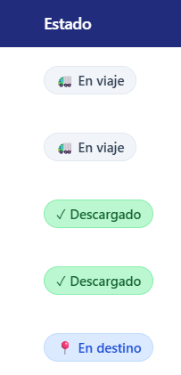
Estados en el historial
Cómo usar
- En el Historial, cada registro muestra su estado actual con un badge de color
- Cualquier usuario puede:
- Marcar como "En destino" (botón azul en detalle)
- Marcar como "Descargado" (botón verde en detalle)
- Revertir al estado anterior si hubo un error (botón amarillo)
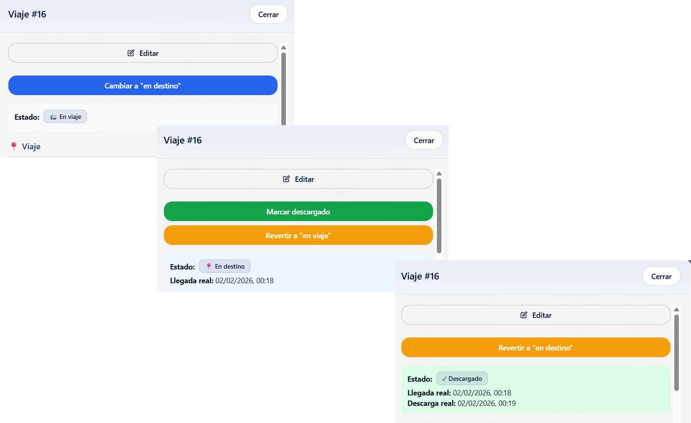
Botones de cambio de estado en detalle del viaje
📊 Exportación de Datos
Desde el Historial puedes exportar registros:
| Formato | Descripción |
|---|---|
| Excel (.xlsx) | Hoja de cálculo con todos los datos para análisis |
| Documento formateado para impresión o archivo |
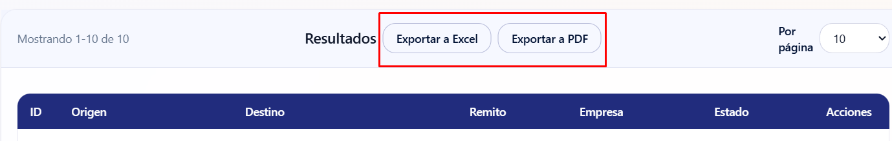
Cómo usar
- Haz clic en "Exportar"
- Selecciona el formato (Excel o PDF)
- Se descarga automáticamente
🔍 Filtros Avanzados en Historial
Filtro por ID de Transporte
- Busca directamente por el número de viaje (ej: "2026-0001")
- Útil para encontrar un registro específico rápidamente
Ordenamiento de columnas
Haz clic en los encabezados de columna para ordenar:
- ID de Transporte
- Origen / Destino
- Remito
- Transportista
- Estado
🔔 Sistema de Notificaciones Push
Flujo de Activación
1. Modal de Bienvenida (Primera vez)
Al ingresar al sistema después de la actualización, aparecerá un modal explicando los beneficios:
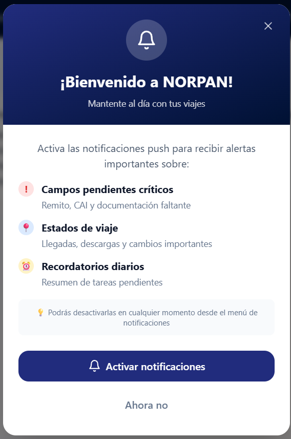
- ✅ Alertas de documentos pendientes (Factura, CAI, etc.)
- ✅ Recordatorios configurables por prioridad
- ✅ Notificaciones solo en horario laboral
2. Permiso del Navegador
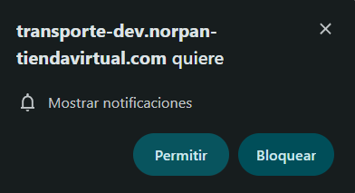
3. Banner Recordatorio
Si no se activaron las notificaciones, aparecerá un banner amarillo cada 7 días:
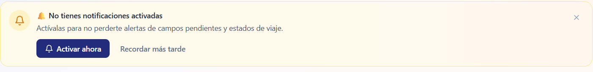
4. Activación desde el Menú
En cualquier momento, el usuario puede activar desde el icono de campana 🔔 en el header:
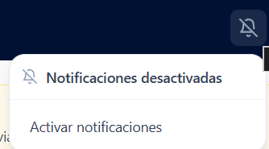
Estado del Icono de Campana
| Icono | Significado |
|---|---|
| 🔔 (verde) | Notificaciones activadas |
| 🔕 (gris) | Notificaciones desactivadas |
Permisos por Rol
| Acción | Operador | Admin |
|---|---|---|
| Activar notificaciones | ✅ | ✅ |
| Desactivar notificaciones | ❌ | ✅ |
| Configurar alertas | ❌ | ✅ |
| Toggle notif. por viaje | ❌ | ✅ |
📊 Indicadores de Campos Pendientes y Completados
Cada viaje en el Historial muestra un resumen visual del estado de completitud de sus campos:
Indicadores en la lista
- Campos pendientes (ámbar): Accordion expandible con campos agrupados por sección:
- 📍 Viaje — Hora salida, Fecha llegada, Hora descarga aprox., Fecha descarga bodega, Cupo descarga
- 📄 Documentación — Remito, CAI, Rubro, Factura, Rentas, DJ-722 / 207, Satelital operativo
- 🚛 Transporte — Empresa, Contacto, Chofer, Patente chasis, Patente acoplado
- Campos completados (verde): Accordion con los campos ya completados, con ✓ delante de cada uno.
- Todos completos: Badge verde "Todos los campos completados".
Actualización instantánea
Al editar un viaje y guardar, los indicadores se actualizan inmediatamente sin recargar la página. Lo mismo al marcar un viaje como "En destino" o "Descargado".
📝 Datos Faltantes y Campos Pendientes
Cuando se registra un viaje, algunos campos pueden quedar vacíos porque la información aún no está disponible. El sistema los identifica como "pendientes" y envía notificaciones automáticas.
Campos que generan alertas
| Campo | Descripción |
|---|---|
| Remito | Número de remito del transporte |
| CAI | Código de Autorización de Impresión |
| Factura | Número de factura asociada |
| Pago Rentas | Indicador de pago de rentas |
| DJ-722 / 207 | Declaración Jurada 722 / 207 |
| Satelital Operativo | Indicador de satelital operativo |
| Observaciones | Notas adicionales del viaje |
Flujo: de la notificación al dato completado
- Recibís una notificación push indicando qué viaje tiene campos vacíos
- Hacés clic y el sistema te lleva al Historial con el viaje afectado
- Si no tenés sesión, te redirige al login y luego al viaje automáticamente
- Se muestra un banner amarillo con los campos realmente vacíos en ese momento
- Hacés clic en "✏️ Editar", completás los campos y guardás
- Si completás todos los campos pendientes, el sistema deja de notificar por ese viaje
Preguntas frecuentes
¿Cuándo se envían las notificaciones?
¿Cuántas veces me notifican por el mismo viaje?
• Crítica (Remito, CAI): Hasta 3 veces al día
• Alta (Rentas, DJ 722): 1 vez al día
• Media (Factura, Satelital): Solo al crear el viaje
• Baja (Observaciones): No notifica por defecto
¿Puedo silenciar las alertas de un viaje específico?
¿Qué pasa si completo un campo y otro usuario recibe una notificación vieja?
⚙️ Configuración de Alertas (Solo Administradores)
Acceso: Icono de campana 🔔 → "Administrar alertas"
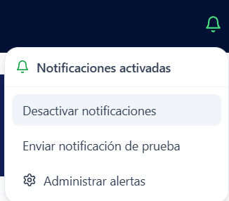
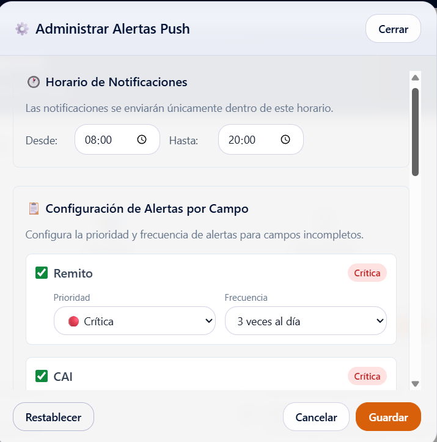
🕐 Horario de notificaciones
- Desde: Hora de inicio (ej: 08:00)
- Hasta: Hora de fin (ej: 20:00)
- Fuera de este horario no se envían notificaciones
📋 Configuración por campo
Para cada campo: activar/desactivar, prioridad (🔴 Crítica, 🟠 Alta, 🟡 Media, ⚪ Baja) y frecuencia.
Campos configurables: Factura, CAI, Remito, Pago Rentas, Taxes Rentas, DJ 722, Satelital Operativo.
Frecuencias disponibles
| Frecuencia | Horarios | Disponible para |
|---|---|---|
| 3 veces al día | 08:00, 12:00 y 17:00 | Crítica, Alta |
| 2 veces al día | 09:00 y 15:00 | Crítica, Alta |
| 1 vez al día | Hora personalizable | Todas |
| Solo al crear | Al registrar el viaje | Todas excepto Baja |
| Ninguna | No notifica | Todas |
Control por Viaje
En el Historial, cada fila tiene un icono de campana:
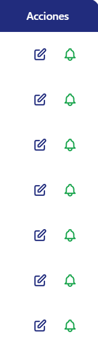
- 🔔 (verde) = Notificaciones activadas para ese viaje
- 🔕 (gris) = Notificaciones desactivadas para ese viaje
🏠 Página de Inicio
La pantalla principal muestra las funcionalidades organizadas por rol:
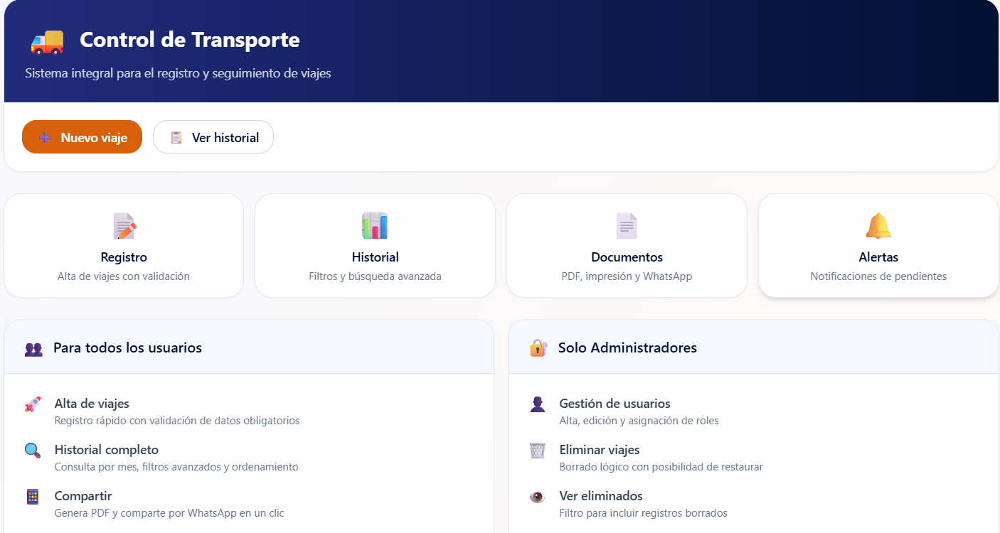
- Funcionalidades generales disponibles para todos
- Funcionalidades de Administrador en sección separada con fondo diferenciado
🔒 Resumen de Permisos por Rol
| Funcionalidad | Operador | Admin |
|---|---|---|
| Ver historial | ✅ | ✅ |
| Exportar Excel/PDF | ✅ | ✅ |
| Editar viajes | ✅ | ✅ |
| Marcar llegada/descarga | ✅ | ✅ |
| Revertir estado | ✅ | ✅ |
| Activar notificaciones | ✅ | ✅ |
| Desactivar notificaciones | ❌ | ✅ |
| Configurar alertas | ❌ | ✅ |
| Toggle notif. por viaje | ❌ | ✅ |
| Ver eliminados | ❌ | ✅ |
| Eliminar viajes | ❌ | ✅ |
| Gestión de usuarios | ❌ | ✅ |
| Auditoría | ❌ | ✅ |
📱 Notificaciones en iPhone / iPad (iOS)
Las notificaciones push en iOS Safari funcionan únicamente cuando la app está instalada como PWA.
Pasos para instalar
- Abrir en Safari (obligatorio usar Safari, no Chrome)
- Tocar el icono Compartir (cuadrado con flecha hacia arriba)
- Seleccionar "Añadir a pantalla de inicio"
- Confirmar con "Añadir"
- Abrir la app desde el icono instalado
- Ahora sí podrás activar notificaciones desde el menú 🔔
Si se abre desde Safari normal (sin instalar), NO aparecerá la opción de notificaciones.